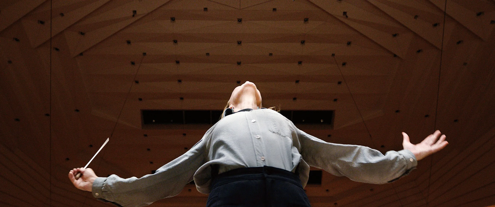

"Having achieved an enviable career few could even dream of, renowned conductor/composer Lydia Tár, the first female principal music director of the Berlin Philharmonic, is at the top of her game. As a conductor, Lydia not only orchestrates, she manipulates. As a trailblazer, the passionate virtuoso leads the way in the male-dominated classical music industry. Moreover, Lydia prepares for the release of her memoir while juggling work and family. She is also willing to take up one of her most significant challenges: a live recording of Gustav Mahler's Symphony No. 5. However, forces that even the imperious maestro can't control slowly chip away at Lydia's elaborate facade, revealing the genius's dirty secrets and the insidious, corrosive nature of power. What if life knocks Lydia off her pedestal?"
Tár is a 2022 psychological drama film written and directed by Todd Field. It stars Cate Blanchett as Lydia Tár, a renowned conductor who is accused of sexual misconduct. The supporting cast includes Nina Hoss, Noémie Merlant, Sophie Kauer, Julian Glover, Allan Corduner, and Mark Strong. Tár premiered at the 79th Venice International Film Festival in September 2022, where Blanchett won the Volpi Cup for Best Actress. The film had a limited theatrical release in the United States on October 7, 2022, before a wide release on October 28, by Focus Features.
Tár received high critical acclaim upon release, with widespread praise directed towards Blanchett's performance. It became the fourth film in history to be named the best of the year by the New York Film Critics Circle, the Los Angeles Film Critics Association, the London Film Critics' Circle as well as the National Society of Film Critics. It was named the year's best film by more critics than any other film released in 2022.At the 95th Academy Awards, Tár was nominated for six awards, including Best Picture and Best Director. For her performance, Blanchett won Best Actress at the BAFTAs, Golden Globes, and Critics' Choice Movie Awards, and was nominated in the same category at the Academy Awards and the Screen Actors Guild Awards.